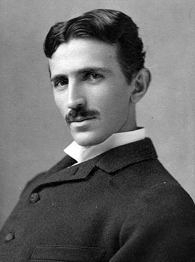

Anti-social behavior is a trait of intelligence in a world full of conformists.-nikola tesla
| born: | 10 july 1856 smiljan, austrian empire (mordern day crotia) |
|---|---|
| Died: | 7 january 1943(aged 86) new york city, new york, U.S |
| resting place: | Nikola tesla museum Belgrade, Serbia |
| citizenship: | Austrian: 1856-1891 American: 1891-1943 |
| education: | Graz university of technology (drop out) |
| Disicipline: | Electrical engineering, mechanical engineering |
| projects: | alternating current, high voltage, high frequency power experiments |
Nikola Tesla (/ˈtɛslə/ TESS-lə; Serbian Cyrillic: Никола Тесла,pronounced [nǐkola têsla];10 July [O.S. 28 June] 1856 – 7 January 1943) was a Serbian-American inventor, electrical engineer, mechanical engineer, and futurist best known for his contributions to the design of the modern alternating current (AC) electricity supply system.
Born and raised in the Austrian Empire, Tesla studied engineering and physics in the 1870s without receiving a degree, gaining practical experience in the early 1880s working in telephony and at Continental Edison in the new electric power industry. In 1884 he emigrated to the United States, where he became a naturalized citizen. He worked for a short time at the Edison Machine Works in New York City before he struck out on his own. With the help of partners to finance and market his ideas, Tesla set up laboratories and companies in New York to develop a range of electrical and mechanical devices. His alternating current (AC) induction motor and related polyphase AC patents, licensed by Westinghouse Electric in 1888, earned him a considerable amount of money and became the cornerstone of the polyphase system which that company eventually marketed.